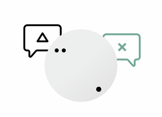
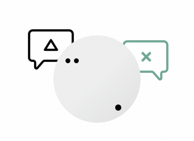
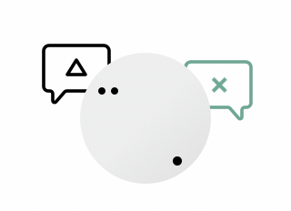

— A collection of resources for a healthy and balanced approach to work.
↓ Browse topics and resourcesStress, Sleep, Focus, Anxiety, Confidence, Motivation ....



By Tim Herrera
BY JOE ROGAN
BY HANNAH DEVLIN
BY MATT D'AVELLA